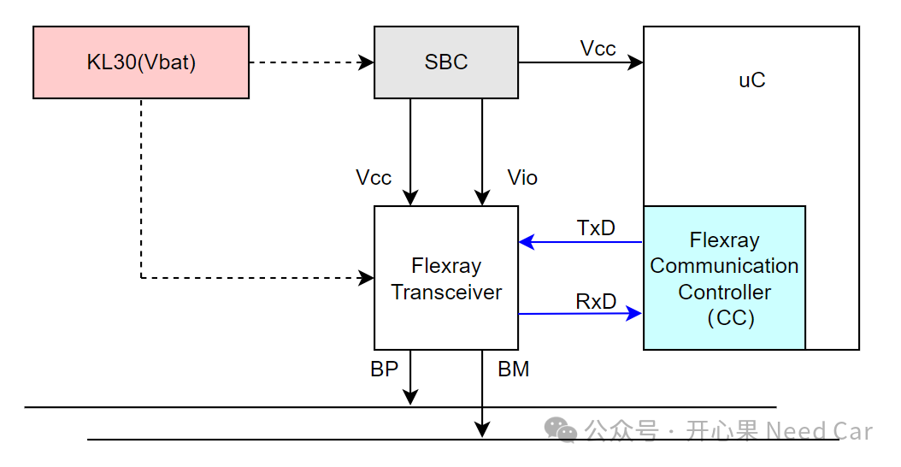
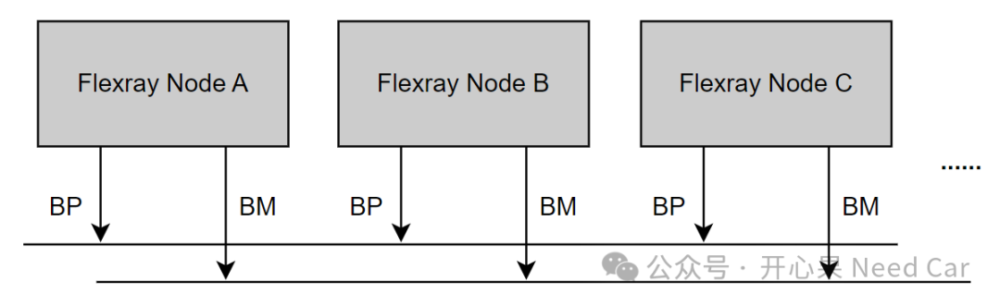
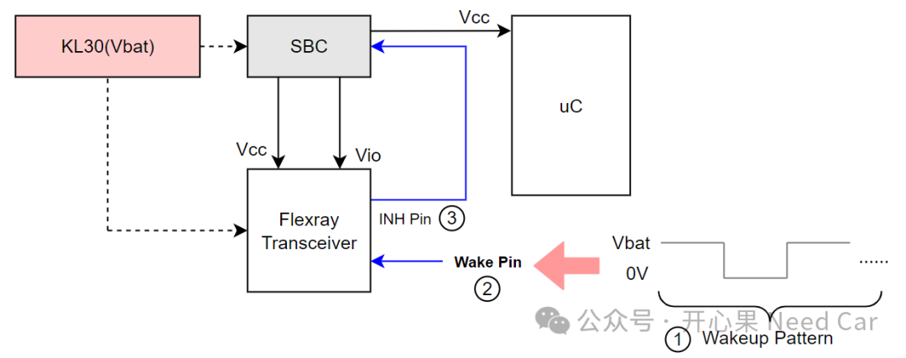
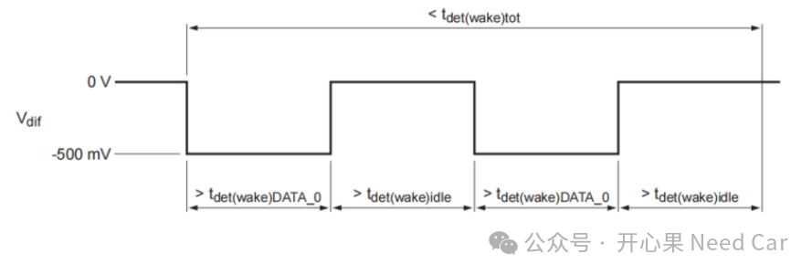
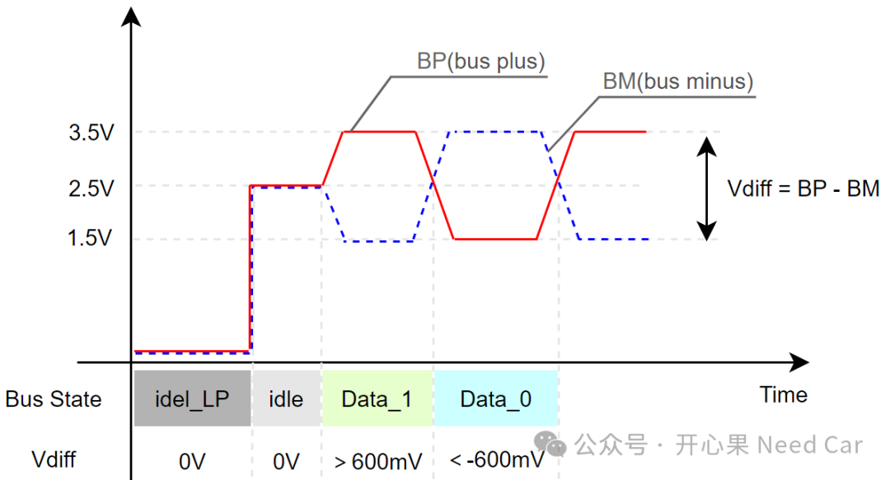

对于搞汽车电子的小伙伴，应该听过Flexray总线，相对于CAN总线，似乎谈不上熟悉。随着车载Ethernet的普及，以及CAN XL的出现，不管是成本还是接受度，Flexray的地位似乎都在经受着挑战。但是，不管怎么说：存在即合理。既然一时半会儿，Flexray不会退出历史舞台，项目中如果使用到Flexray总线，那么，我们就试着去"拥抱"，去适应项目，抵触情绪并不能帮我们解决问题。对于Flexray总线，之前就有小伙伴要求分享一下。从本文开始，我会出一个Flexray系列，试图把自己有限的理解分享给大家，而我的理解还很浅显，难免偏颇，仅以此抛砖引玉。
如果项目中，用到Flexray总线，那么，该控制器大概率是网关节点（Gateway），也就是主干网节点，而且，需要参与总线路由。
Flexray节点的总线构成和其他总线节点类似，一般由收发器（Flexray Transceiver）、通信控制器（Flexray Commuincation Controller）、数据发送/接收主机（uC）、供电单元（SBC和Vbat）等组成，示意如下：

如上图，在PCB（Printed Circuit Board，印刷电路板）设计中，通常将CC集成到uC中，Transceiver独立于uC，同时，Transceiver与Vbat常连，以便于监控唤醒事件。多个Flexray节点挂接到相同的物理链路时，就构成了Flexray的网络簇，示意如下（本文不讨论星型结构）：
讨论唤醒，我们首先需要明确唤醒方式。不管是CAN总线还是Flexray总线，唤醒方式方式一般都会分为本地唤醒和远程唤醒。讨论本地唤醒，多数是讨论Transceiver的Wake Pin唤醒方式，Wake Pin是一个输入（Input）引脚，当捕获到一定的唤醒时序时（Wakeup Pattern）时，将INH Pin拉高，使得SBC激活，进而给Transceiver、uC等功率器件提供工作电压，示意如下：

但是，本地唤醒往往只是唤醒节点本身，如果要唤醒节点所在的网络簇，那么，该节点就有一个任务：唤醒网段内的其他节点。因此，具有本地唤醒的节点也称为主动唤醒节点。远程唤醒，有时也称全局唤醒。当主动唤醒节点唤醒以后，它负责发送唤醒帧（WUP，Wakeup Pattern），以便于唤醒网段内其他节点，进而实现远程唤醒，即：局部网段内所有节点的唤醒。唤醒符（WUS，Wakeup Symbol）什么样呢？示意如下(1)：

主动唤醒节点通过BP和BM，控制总线压差（Vdiff），产生如上图的WUS。当然，根据Transceiver功能，也可以设置特定帧唤醒。
理解WUS，需要理解Flexray的位流（bit stream），也就是uC如何将数字信号（0或者1）通过总线传输给接收节点。Flexray总线和其他总线一样，uC将数字信号发送给收发器（Transceiver）转换成对应的模拟电压，发送到总线。对于Flexray，BP和BM在总线上的传输形式如下所示：

Flexray类似CAN总线，通过控制一对双绞线（BP和BM），形成不同的压差（Vdiff）去模拟要传输的信息。当Vdiff（BP-BM）＞600mV时，表示隐性位（"1"）；当Vdiff（BP-BM）＜-600mV时，表示显性位（"0"）。
实际工程中，WUP由多个连续的WUS组成，而且，一般要求每个Flexray节点的WUS个数不同。eg：Flexray Node A的WUP有42个WUS，Flexray Node B的WUP有43个WUS。
实际的工程中，需要明确输入WUS的WakeupSymbolTxIdle时间（eg：180 gdBit）和WakeupSymbolTxLow时间（eg：60 gdBit）。gdBit就是标准位时间（Nominal bit time），如果使用10Mhz的通信速率，gdBit = 1/10000000 = 0.1us。因此，WakeupSymbolTxIdle = 180 * 0.1 = 18us，WakeupSymbolTxLow = 60 * 0.1 = 6us。所以，一个WUS = 18us("1")+6us("0")组成。首先，WUS需要通过Flexray总线发送给接收节点的的总线驱动（BD，Bus Driver），也就是接收节点的收发器，唤醒收发器后，才能触发SBC给功率器件提供工作电压。注意：同一网段内的所有Flexray节点，WakeupSymbolTxIdle、WakeupSymbolTxLow需要设置一样。
（1）TJA1081B FlexRay node transceiver.pdf点击下方关注，一起聊聊Autosar/嵌入式，如果需要，联系作者进群，给你更专业的解答